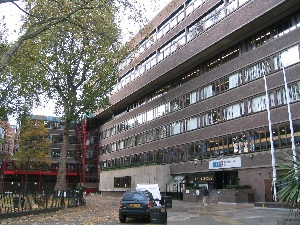

-

- Created by Rob Finean
Going (10) 16
16
 3
3 -
- Event
- Paint a mural to brighten up City University
-
- Description
- We're sick of looking at this grey wall on the main
concourse! We need some talented artists to
inspire the students with some beautiful artwork.
Graffiti artists welcome too!

This is what it looks like now! -
- Date
- August 19th, 2012 @ 14.00
-
- Location
- City University, College Building
-
- Skills needed
- Painters
Graffiti artists
General help
Comments (3)